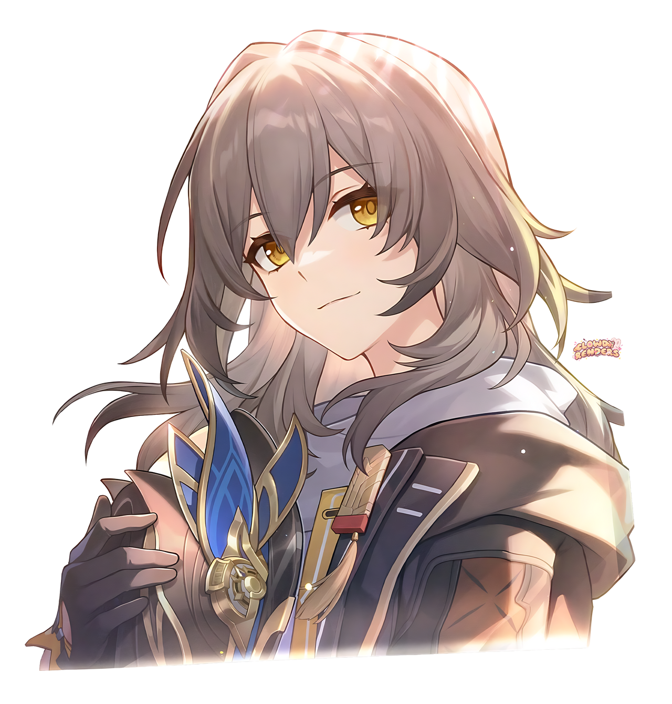
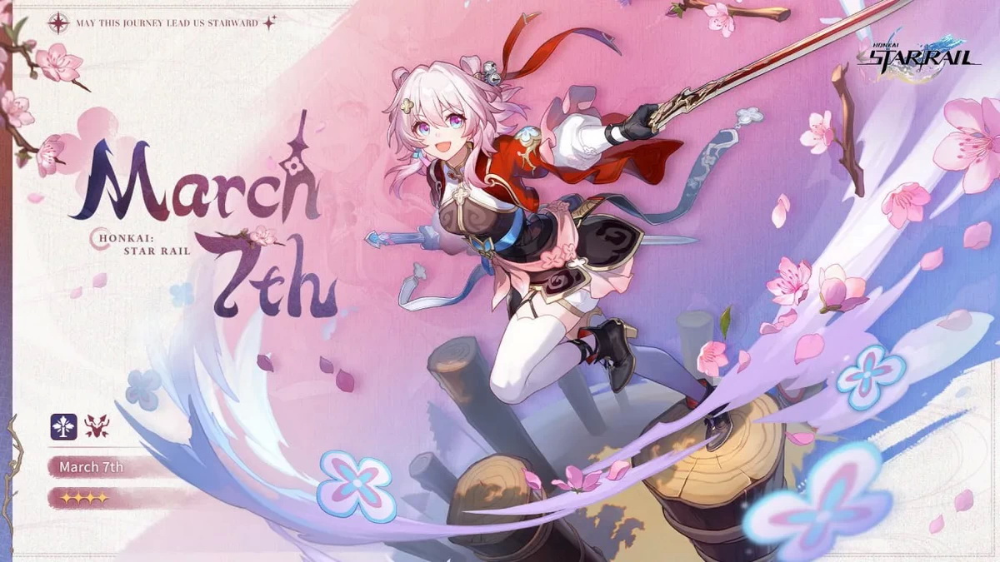
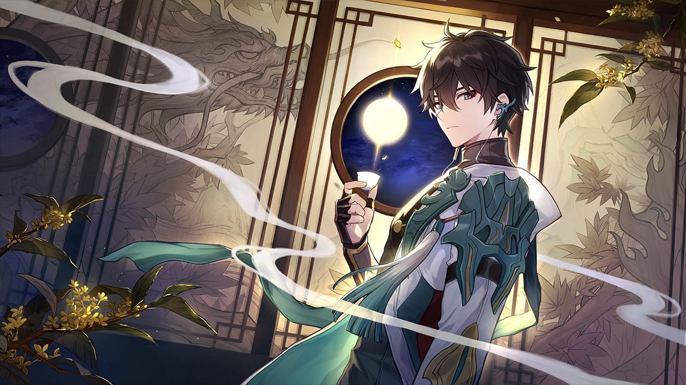
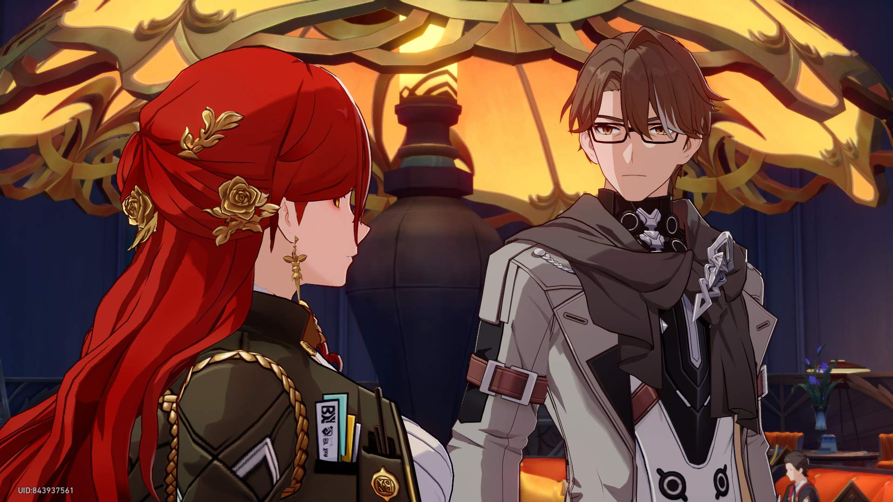

Trailblazer
The main character who begins a journey across the stars after receiving a mysterious power.
The people who make the journey unforgettable
Every character has their own personality, background, and role in the story. Here are a few familiar faces from the Astral Express and beyond.

The main character who begins a journey across the stars after receiving a mysterious power.

A cheerful member of the Astral Express who enjoys taking photos and discovering new places.

A calm and thoughtful member of the Express who keeps records of its journeys.

Experienced companions who help guide the Astral Express and its crew.